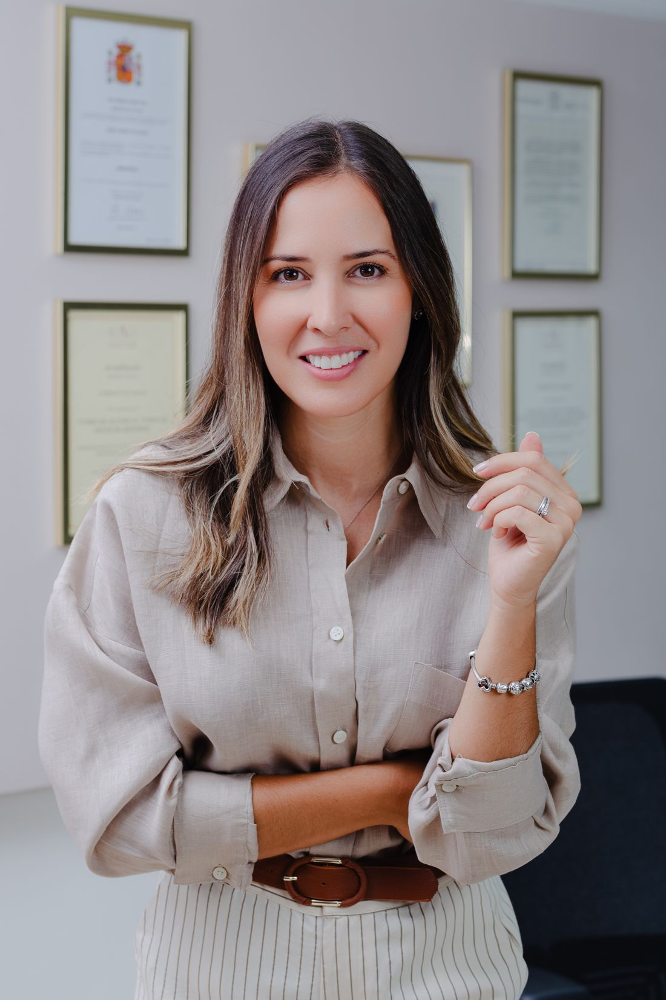

Divórcio no exterior
Para quem mora fora do Brasil: divórcio em cartório por videoconferência, no consulado, na justiça do país onde vive ou no Brasil, conforme o caso.
Como funciona →Divórcio no exterior, homologação de decisões estrangeiras no Brasil, inventário com bens em mais de um país e guarda entre países. Por trás de cada processo há pessoas passando por uma fase difícil. Meu trabalho é conduzir essas questões com rigor jurídico e atenção ao lado humano, priorizando o diálogo e as soluções consensuais sempre que possível, para que o caminho pese o menos possível.

Famílias multiculturais, casamentos celebrados no exterior, filhos e patrimônio em países diferentes. Essas situações exigem conhecer mais de um sistema jurídico e os caminhos para que decisões e documentos sejam reconhecidos onde precisam valer.
Quando há consenso, muitas questões podem ser resolvidas fora do Judiciário, em cartório.
Para quem mora fora do Brasil: divórcio em cartório por videoconferência, no consulado, na justiça do país onde vive ou no Brasil, conforme o caso.
Como funciona →Para que um divórcio ou outra decisão proferida no exterior produza efeitos no Brasil, pela homologação no STJ ou pela averbação direta em cartório, quando a lei permite.
Entenda os caminhos →Herança com bens ou herdeiros em mais de um país: onde fazer o inventário, qual lei se aplica e como participar sem viajar.
Saiba mais →Revisão e confirmação de sentença brasileira em Portugal e reconhecimento de decisões portuguesas no Brasil, com inscrição nos dois países.
Saiba mais →Havendo acordo, divórcio e inventário podem ser feitos por escritura pública, com assistência de advogado, inclusive, em muitos casos, com filhos ou herdeiros menores.
Ler o artigo →Guarda, convivência e alimentos quando pais e filhos vivem em países diferentes, sempre com atenção ao interesse da criança.
Um divórcio ou um inventário mexe com luto, medo, filhos e patrimônio. Minha formação em Neurociência do Comportamento e em Mindfulness e Compaixão se soma ao Direito para conduzir essas conversas com clareza e respeito, reduzindo o desgaste e ajudando as pessoas a tomarem decisões mais conscientes.
Entender a história, as pessoas envolvidas, os países e os bens em jogo, antes de qualquer estratégia.
Avaliar se a via consensual e extrajudicial é possível, ou se o caso exige o Judiciário, em um ou mais países.
Comunicação clara em cada etapa, organização de documentos e acompanhamento online, onde quer que você esteja.
Os requisitos para resolver essas questões por escritura pública e o que mudou com a Resolução CNJ nº 571/2024.
Ler artigo → InternacionalQuando basta averbar no cartório e quando é preciso homologar a decisão no STJ.
Ler artigo → PatrimônioRegime de bens, sucessão e inventário quando o patrimônio está espalhado pelo mundo.
Ler artigo →Aline Vidanes é advogada inscrita no Brasil (OAB/SP 396.351) e em Portugal (Ordem dos Advogados, cédula 61988P), com atuação em Direito de Família, em especial nas questões extrajudiciais e nas que envolvem famílias e patrimônios em diferentes países.
Formada em Direito e em Ciências Biológicas, tem especializações em Neuropsicanálise e Neurociência do Comportamento e é mestre em Mindfulness e Compaixão pela Universidad de Zaragoza, na Espanha. Essa formação orienta sua forma de conduzir conflitos: com técnica, escuta e atenção ao impacto emocional de cada decisão.
Atende online clientes no Brasil e em diversos países.
Responderei para agendarmos um atendimento. As informações enviadas são tratadas com sigilo profissional.

Aline Vidanes é autora do livro publicado pela Freitas Bastos Editora e criadora do PAC, Programa Advocacia Consciente®, dedicado à saúde mental dos profissionais do Direito.